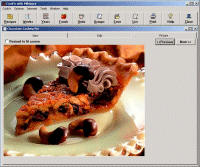

Get Your Weekly Meal Planning Done in 5 Minutes (Yes, It's Possible)
The benefits of weekly meal planning are obvious: healthier meals, less money spent on dining out, and stress-free family dinners. Moms today are
busier than ever. We need to be able to do our planning in minutes, not hours.
I used to dread my weekly meal planning. It would take forever. First, I'd go through my binder of recipes and pull out the ones I wanted
for the week.
Then I'd type up the meal list for the week (for the fridge) then I'd go through every recipe and write out the ingredients, crossing
out things I already had.
After about an hour or so, I finally had a finished product...for the week. By Sunday I had to repeat the whole thing again. I hated doing it.
After my second baby was born, I just did not have an hour or so to spend every week on meal planning. I needed a faster, more efficient
way to organize my recipes.
After several months of trial and error, I settled upon a few tools and techniques that have reduced that time from hours to a few minutes every week.
As I discussed in my article about becoming a meal planning professional, there is one tool that makes
weekly meal planning in minutes a reality. That tool is my recipe-organizing, meal planning software program.
Without it, I would be back at the 1-hour-a-week snail's pace. Currently, the number one meal planning software on the market is Cook'n.
So in service to my dear readers, in this article I will discuss the benefits and costs of using Cook'n for your weekly meal planning.
Helpful Features I Love
Recipes, Recipes, and More Recipes
In order for a weekly meal planning software to be useful, it obviously has to get an A+ in recipes. Here are the recipe-related benefits to using
Cook'n as your recipe organizer.

Besides the hundreds of recipes available in the software, you can add your own favorites.
You can print the recipes in 3x5, 4x6, or full page format. You can also email them to your friends (who will be asking).
Most of the recipes come with full-color photographs. There's nothing like seeing what it's supposed to look like for cooking motivation.
You can search for recipes by title, by ingredient (that zucchini that's going bad...), by photograph, or by category.
Cook'n will do all the calculations automatically if you need to increase (or decrease) a recipe. (But you'll have to adjust the instructions. Brownies
re-calculated for 20 aren't going to fit in a 9x9 pan!)
Each recipe in the program (including the recipes added by you) are nutritionally analyzed, letting you see exactly how much fat was in
Aunt Margaret's Bran Muffins after all.
The "Home Cook'n Monthly Newsletter" gives new downloadable recipes and provides how-to videos for step-by-step help.
Weekly Meal Planning Guide
Perhaps the biggest draw is it's ability to automate your weekly meal planning. With easy drag-and-drop mouse movements, you can create weekly,
monthly, or even yearly meal plans.
After doing your meal plan, Cook'n will create a customized grocery list for you to print. This grocery list will be organized by aisle (to
save you time at the store).
It will also convert ingredients to packaging sizes. Who shops for 2 cups of chicken broth, anyway? Cook'n converts
that to a size you can purchase. In this case, a 14.5 oz can.
Even better, it will look over your grocery list and calculate how much you can expect to spend that week. (Looks like the lobster will have to wait
another week. You're over-budget!)
Cook'n analyzes the nutrition of your menu, so you can see if you're going to be getting too much fat or not enough fiber.
Finally, You can print your
menu off to post on the fridge, or save it for future use.
In my opinion, the weekly meal planning guide in Cook'nalone gives it a gold star. I love having all my information in one, instant-access,
space.
Downloadable Ethnic, Health, and Specialty Cookbooks
Unlike many other cooking software programs, you could cook on the recipes in Cook'n for years without ever having to purchase more. With 300 recipes
(not including ones you add), you could be set for life!.
However, when it comes to food, I have the attention-span of a fly. New recipes keep me motivated to cook!
{Photo by Mrs. Magic}
I will inevitably get bored with the recipes and start looking in other books for new things to try with other software programs, I would
have to manually add those recipes to my pre-existing database. All that extra work begs the question, Why did I buy the software in the
first place? That's time I simply don't have.
Cook'n, recognizing a huge cash-cow opportunity in people like me, has developed a huge line of downloadable e-cookbooks that can be integrated
into the original software.
Indian food, freezer meals, diabetic recipes, desserts, Betty Crocker favorites, Taste of Home, Grilling, kid-friendly...each has it's own e-cookbook you could try instantly
whenever you felt like.
You certainly don't have to purchase these secondary cookbooks, Cook'n has a large database of 300 recipes in itself. However, if you
do get a hankerin'
for some new recipes, it would be nice not to have to manually enter them into your recipe organizer one by one.
Coupons and Sales
They are currently offering several specials.
First, all orders over $100 receive free shipping.
Second, with the coupon code "dailyspecial" entered in the promotional code box at checkout, you can get 10% off the
purchase of $50 worth of software.
Third, after you buy the software, you can enroll in the monthly Cook'n Club, where you get a free download of any of their cookbooks.
This club is free for the first 30 days and then you'll have the option of continuing or canceling. Unless you choose to continue, you're card
is not charged.
My Largest Hang-Up
I think the biggest obstacle with this product is price. It's not cheap. However, on the flip side, there are several benefits that Cook'n
offers that I've not seen in other meal planning software.
UPDATE! Exclusive coupon for EiR readers! Cook'n has generously provided my readers an extra 20% off
discount just for the Essential Infant Resource! Use code infants to claim your discount.
Nutritional analysis ~ The fact that it will nutritionally analyze new recipes that you put in, as well as the recipes
already there, is a huge bonus.
Video demonstrations ~ Not only are their video demonstrations on how to use the software, there are videos on how to
make the recipes. (I'm a visual learner.) You can see a video demonstration of the software here.
Support ~ There is an actual phone number available for help. A small thing, perhaps, but rare on most software sites.
Community ~ An online forum is available to share favorites with other Cook'n users, along with a monthly newsletter that
provides new recipes (with how-to videos) you can download.
History ~ Cook'n has existed for 18 years. They are a stable company that isn't going to go belly-up and leave you high
and dry. Plus, they are on top of technological advancements and make adjustments accordingly.
Side Note:Another meal planning software (Mastercook) recently
announced that they are not Windows-Vista compatible. How frustrating to purchase and spend time adding
your recipes and learning the system, only to have it be useless when your Windows system updates! These issues are not a problem with Cook'n.
If you can afford it, I strongly recommend using it. It will save so much time in your meal planning and organizing. It is truly the cornerstone
secret in weekly meal planning in minutes.
Having done weekly meal planning the 'ole fashioned way and then now doing my meal planning according to the 21st Century, I'm a lifetime converter.
I'll never go back to that way again.
If you're interested in Cook'n, but are nervous about learning a new software program,
click here to see some free demonstration videos. They
also offer a 200% money-back guarantee for first-time buyers.